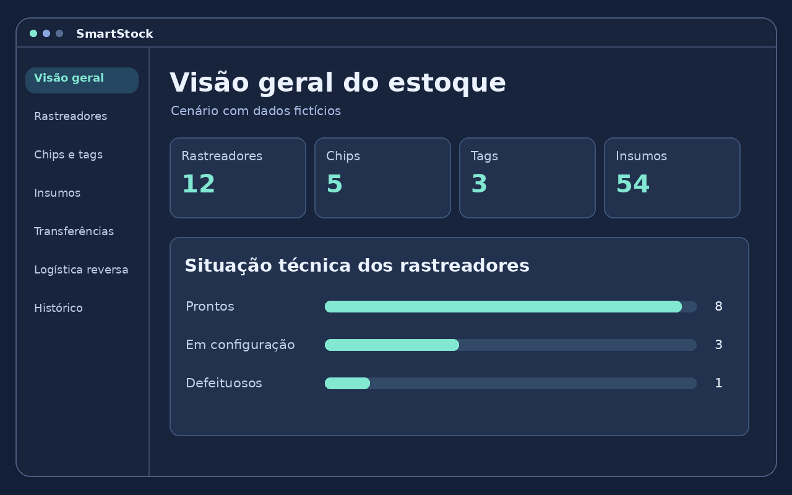

Estoque por produto,
saldo por local.
Controle mercadorias, peças e materiais de consumo. Consulte o saldo em cada local e acompanhe entradas, saídas e transferências.
Testar o estoqueSem cadastro. A simulação começa com três produtos fictícios.
